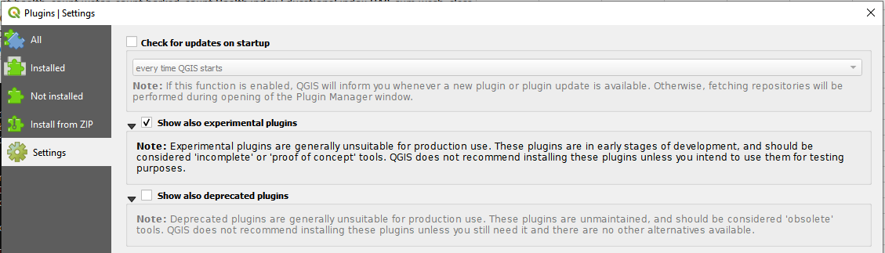
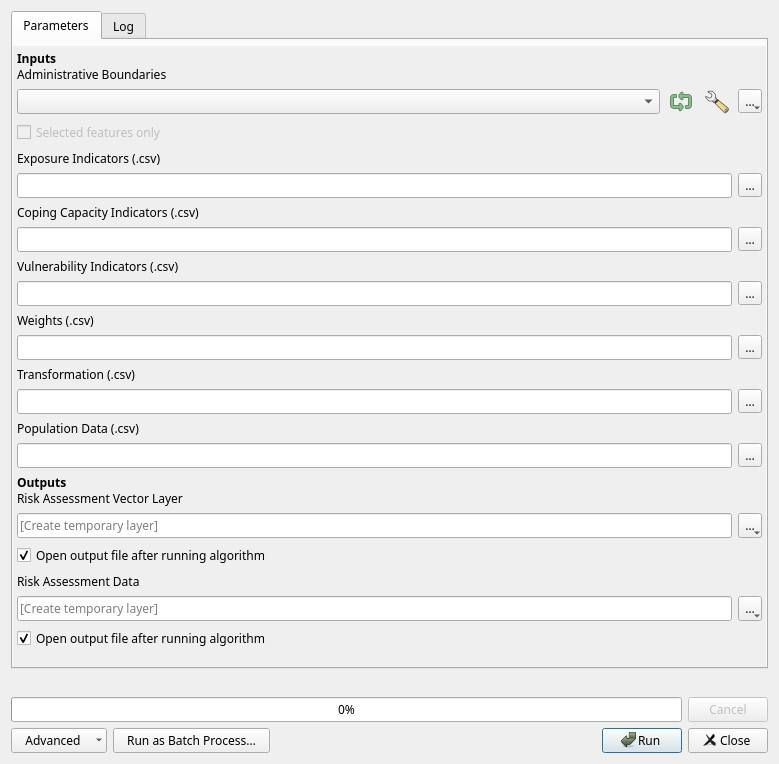
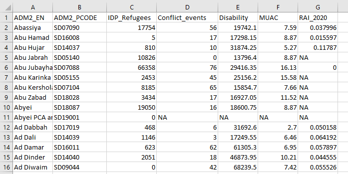
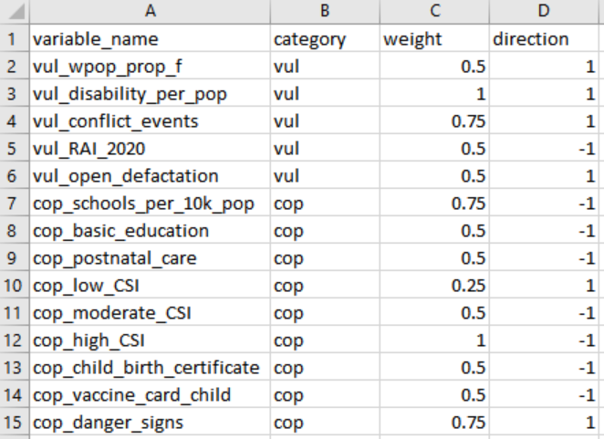
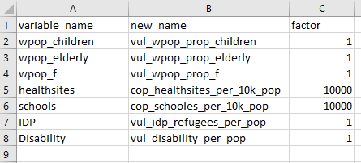
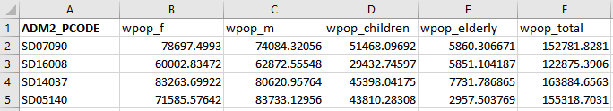

Risk Assessment QGIS Plugin#
Introduction & Purpose#
In the context of the Forecast based Financing methodology the conduction of a robust risk assessment is a crucial step towards the development of an Early Action Protocol. A risk analysis serves to understand what kinds of disaster impacts can be expected from a particular type of hazard and to identify who and what is exposed and vulnerable to this hazard and why. By overlaying the information on exposure, vulnerability and lack of coping capacity, it will become clear which areas are predicted to be most severely impacted. These areas can then be targeted as priority areas for early action to ensure the most at-risk communities receive assistance before the event happens. The collection and processing of this information varies throughout different contexts but the calculation scheme to combine the information to a risk score remains consistent. At HeiGIT we have developed a risk assessment workflow that is applicable across different countries and disaster contexts. To make the process more user-friendly, we have chosen to convert it into a QGIS Plugin. This makes it more accessible and easier to use, especially for individuals with limited technical knowledge. The plugin automatically calculates the risk based on the exposure, susceptibility and coping capacity indicators entered by the user. Hereby the user cannot only assign different weights and directions to the indicators but also receive different population measures based on worldpop data (sex and age structures) and offset them against chosen indicators.
Requirements & Installation#
The use of the plugin requires Python pandas to be installed on your system. You can check in QGIS directly if you have it installed or not:
Open the Python Console in QGIS
Launch QGIS
In the menu bar click on Plugins
Select Python Console
Check if Pandas is installed
In the Python Console type the following command and press ENTER:
Import pandas
If the library is installed, this command will execute without error, and you won’t see any error messages. If pandas is not installed, you will see error messages indicating that the respective module cannot be found. In that case, you will need to install the missing library. You can install pandas using pip: Install pandas on Windows/ Mac:\
Open the Command Prompt (Windows)/ Terminal (Mac)
Install pandas by running the following command and press ENTER: pip install pandas
QGIS Versions
The Plugin is available for QGIS Version 3.28 onwards.
Getting Started#
To install plugins, you need to open the Plugin Manager:
Click on the menu item Plugins > Manage and install Plugins.
Click on Settings and check the box “Show also experimental plugins”
{kind=link}

In the dialog that opens, find the Risk Assessment plugin.
Find information about the plugin by selecting it in the list.
Install it by clicking the Install Plugin button below the plugin information panel.
Close the dialog. The Risk Assessment plugin should now be available.
How to open the plugin interface:
To use the Risk Assessment plugin open the
Processing Toolbox.The Toolbox shows a list of all available algorithms.
At the bottom it should list
HeiGIT Risk Assessment. you can also search for “Risk Assessment” using the Search function of the Processing ToolboxTo execute the plugin, just double-click on its name.
A dialog called Calculate Risk Assessment should appear.
For further information about installation and usage of plugins visit the QGIS Training Platform.
User Interface#
The plugin needs 7 inputs, from which 6 are csv text files and 1 is a vector file. The input of these 7 files is mandatory. The majority of the files can be produced and adjusted in Excel. This allows for flexibility to adjust input to local contexts. The requested input information can be browsed for via the button on the right. These files need to be present on the user’s computer. It is important to follow the input file specifications exactly (see chapter 4.1.). The plugin will provide the user with two outputs. The Risk Assessment results on the administrative boundaries as a vector file containing geometries ready to be displayed in QGIS and the Risk Assessment results in a table format. The desired data format of the vector and text outputs can be chosen during the saving process.
{kind=link}

Data Input#
The required input files must follow a given structure. You find below the required input files to conduct the risk assessment and specifications they must follow:
1. Administrative boundaries level 2#
A geospatial vector format (geojson, geopackage, shapefile,…) containing the administrative boundaries on admin level 2 and P-Codes of the respective countries. These can be found on the websites of national governments or on Humanitarian Data Exchange, for example. This dataset has two obligatory columns: “ADM2_PCODE” containing the P_Codes and “ADM2_EN” containing the district names. The administrative boundary data does not require a specific coordinate reference system (CRS), but the output and result will have the same CRS as the input.
2. Risk Assessment indicators#
For the Risk Assessment indicators the following 3 “csv”-files are mandatory:
a) Exposure indicators: A “csv”-file containing a mandatory column “ADM2_PCODE” with the district codes and all columns that are included in the calculation of the exposure-indicator. All columns that are not included in the calculation must start with the expression “ADM…” (for example “ADM_NAMES”)./
b.) Vulnerability indicators: A “csv”-file containing a mandatory column “ADM2_PCODE” with the district codes and all columns that are included in the calculation of the vulnerability-indicator. All columns that are not included in the calculation must start with the expression “ADM…”./
c) Coping Capacity indicators: A “csv”-file containing a mandatory column “ADM2_PCODE” with the district codes and all columns that are included in the calculation of the coping-indicator. All columns that are not included in the calculation must start with the expression “ADM…”.
{kind=link}

Weights-file#
A “csv”-file containing a column “variable_name” with all the column names of the previous “csv”-files, which are to be weighted differently in the calculation. A factor for “weight” and “direction” can be determined.
{kind=link}

Attention
The column name must be given the appropriate prefix (vul_, cop_, exp_) depending on which dimension it comes from. The file must also contain the columns “weight” and “direction”, which indicate the weight and direction of the variable (e.g. schools = cop_schools). For more information about weights and directions see chapter weight and directions..
Dimension |
Prefix |
|---|---|
Exposure |
exp_ |
Vulnerability |
vul_ |
Coping Capacity |
cop_ |
Transform-file#
A “csv”-file containing a column “variable_name” with all the column names of the previous “csv”-files, that are to be divided by population.
{kind=link}

The transform-file is used to offset certain indicators against the worldpop population. The column “variable_name” provides names of the indicator columns of the indicator files of one of the dimension exposure, vulnerability or coping capacity, that are to be divided by population. These variables are existent, they must be consistent with the respective variable names in the indicator input or population “csv”-files. The column “new_name” provides the name of the column with the transformed values. It is important to aggregate the prefix describing the dimension it comes from (vul_, exp_, cop_). The column “factor” (default to 1) provides the factor by which the specific indicator value will be divided. Example: if you assign the indicator „healthsites“ the factor 1 it will give you a value on how many healthsites the admin district has per person. Assigning the factor 10.000 will result in the number of healthsites per 10.000 inhabitants.
Population-file#
The required “csv”-file containing population information based on Worldpop Sex & Age 2020 will be provided globally on admin level 2 with this plugin in the near future. To use the experimental plugin, please contact HeiGIT so that HeiGIT can provide the “csv”-file for your country. Alternatively, the population-file can also be created independently according to the following pattern. The “csv”-file based on the worldpop data contains the following columns (see Fig. 5), where the columns “ADM2_PCODE” and “wpop_total” are mandatory and names cannot be changed. All other columns can be adjusted, but they need to be picked up and be consistent with the variable names in the Transform-file. This means that a population “csv”-file can be generated based on other available population data by the user as long as the two former mentioned columns exist.
{kind=link}

Data Output#
The plugin provides the user with the following output: Geospatial data format to be chosen by user (geojson, shapefile, geopackage) with admin level 2 boundaries for the respective country including the following values for each admin level 2 polygon:
P-Code
Region name
Exposure indicators
Vulnerability indicators
Coping Capacity indicators
Vulnerability score
Coping score
Exposure score
Risk score
Rank (by risk)
The output data will contain No Data Values. By default in QGIS these Values are shown as “-999”. These no data values mean that there is no exposure and consequently no risk for the concerned districts.
Methodology#
The methodology for the Risk Calculation is based on Weltrisikoindex and is also inspired by the INFORM Risk framework. The basic model of the WorldRiskIndex with its modular structure was developed jointly with the United Nations University Institute for Environment and Human Security (UNU-EHS). Since 2018, the Institute for International Law of Peace and Humanitarian Law (IFHV) at the Ruhr University Bochum has taken over the calculation and continuously developed the model conceptually and methodologically. In the context of this analysis, risk is defined as the interaction of the two dimensions of exposure and susceptibility, which arises only where the two spheres meet. In this respect, risk is only present where there are hazards from extreme natural events and where populations without sufficient resilience, coping or adaptation capacities live in these hazard areas. The risk assessment is conducted on admin level 2, so it can easily be summed up on coarser levels.
Transformation by Population#
By means of the Population-file the user is enabled to create population based indicators and to offset certain indicators with the population numbers. By indicating an existing indicator, creating a new name and setting a factor, the variables are offset in the following manner:
\( new\ Indicator= \frac{indicators\ to\ be\ transformed}{Total\ Population} \times factor\)
Normalization#
Throughout the risk calculation values need to be normalized at two points: First the indicators must be normalized in order to calculate the scores for the three dimensions vulnerability, coping capacity and exposure and these resulting scores must be normalized in order to process them further into a risk score.
Indicator normalization
Depending on the context and content of the data, the value range of the indicators is wide. In order to make them comparable, in a first step all indicators are normalized to a value range between 0 to 1. Each value is scaled so that the minimum value in the series becomes 0, and the maximum value becomes 1. Values in between are linearly scaled based on their position within the range. A common Min-Max Normalization is used:
\( Normalized\ Value\ = \frac{value\ -\ min value}{max\ value \ - \ min } \)
The second normalization takes place when the scores need to be normalized in order to calculate the final risk score (see section Score Normalization).
Imputation#
If indicators present missing values, no index values can be calculated for the respective admin boundary, so they would have to be removed from the ranking. To avoid this, the approach makes a pessimistic assumption for missing values in the categories Vulnerability and Coping Capacity: Missing values are assigned the worst circumstances for the respective category (for example highly vulnerable or very low coping capacity). For the category exposure, it is not possible to assume pessimistic circumstances since the risk highly depends on an existing exposure. Basically without exposure there is no risk (e.g. non existent river = non existent riverine flood risk). If we do not have values for exposure we will therefore have to assume that there is no information or no exposure in order not to falsify the result and assume a high exposure in an area where there is none. Since the input data does not consider time series, it is not feasible to make realistic estimates. Remembering the logic explained earlier this results in the following substitution of missing values (each representing the worst possible value):
NA Values from dimension |
Substitution |
|---|---|
Exposure |
NA/-999 |
Vulnerability |
1 |
Coping Capacity |
0 |
Weights and Directions#
In order to calculate the overall score for each dimension, indicator weights and directions are introduced. The indicators for the three dimensions Exposure, Vulnerability and Coping Capacity receive different weighting and directions which depend on local and expert knowledge and are adjustable.
Weights
The weights represent the importance of the respective indicator and needs to be defined by the user. The default value is 1 (no weighting). The weights can be chosen and adjusted by the user in the Weights-file. Nevertheless, we recommend the following weights structure ranging between less important and very important (0.25, 0.5, 0,75, 1):
Weight |
Definition |
|---|---|
0 |
Not Important |
0.25 |
Slightly Important |
0.5 |
Moderately Important |
0.75 |
Fairly Important |
1 |
Very Important |
Directions
The direction indicates if an indicator follows the predefined logic: “the higher the value, the worse the circumstances” meaning that higher values would result in a higher risk. The logic is adapted for all three dimensions, since it is generally logical to think about high values = high risk. If a respective indicator follows the logic the direction would be 1(default), if it does not, the direction would be = -1.
Logic |
Example |
Direction |
|---|---|---|
the higher the value the worse the circumstances |
conflict events, people with disability |
1 |
the lower the value the worse the circumstances or the higher the values the better the circumstances |
improved watersources |
-1 |
Example 1: If the indicator “Rural Accessibility Index” (proportion of the rural population who live within 2 km of an all-season road) is part of the vulnerability dimension it does not follow the logic “the higher the value the worse the circumstances”. A high value in this case is good and therefore we have to assign direction = -1 to this variable. In principle, the two dimensions vulnerability and exposure follow the predefined logic and coping capacity does not. The lower the values of coping capacity, the worse the circumstances. Thus, the default value for this dimension would be -1, although this does not apply to all indicators.
Example 2: For coping capacity we could have the following indicators: “number of schools”, “number of health sites”, ”travel time to nearest health facility”. The first two indicators “number of schools” and “number of health sites” follow the logic “the lower the value the worse the circumstances” thus they must be assigned direction = -1. The indicator ”travel time to nearest health facility” follows another logic (“the higher the value the worse the circumstances”) and thus must be assigned direction = 1.
It is recommended to properly check the logic of each indicator. Often the indicators of a certain dimension follow the same logic but there are always exceptions. After the directions have been applied to the data, we can speak of “lack of coping capacity” instead of “coping capacity” since we force the respective indicators in another direction following the predefined overarching logic (the higher the value = the worse the circumstances).
Risk#
Calculation of scores
The normalized and substituted indicators are summed up into three scores (Exposure, Vulnerability, Lack of Coping Capacity) by considering the user defined weights and directions. The weighted score for a specific variable is calculated using the following formula, where value is the value of the variable in the dataset and weight is the weight assigned to the variable.
If the direction is 1 (indicating a positive weight), the formula is straightforward:
\( weighted= value \times weight \)
If the direction is -1 (indicating a negative weight), the formula adjusts the value by subtracting it from 1 before applying the weight:
\( weighted= (1 - value) \times weight \)
The second formula inverts the value \((1 - value)\) before applying the weight, resulting in a different calculation for variables with negative weights.\
After considering weights and directions, the weighted variables are summed up to scores for each dimension (Exposure, Vulnerability, Lack of Coping Capacity):
\( score= \sum weighted\ values \)
Scores normalization
After the calculation of the scores, they are normalized based on the number of indicators they consist of (see 2nd normalization in chapter Normalization 5.1). This makes the scores relative to the number of indicators:
\( normalized \ scores = \frac {scores}{number of indicators} \)
Calculation of risk
The risk is calculated by the geometric mean of the dimensions Exposure and Susceptibility, while Susceptibility is defined by the geometric mean of Vulnerability and the Lack of Coping Capacity. The geometric mean is chosen since it offers the advantage of rewarding balanced developments and equal reduction of deficits at all levels of the model:
\( susceptibility = \sqrt vulnerability \times lack\ of\ coping\ capacity \)
\( risk= \sqrt exposure \times susceptibility \)
Known Limitations#
The Population-file must be provided by HeiGIT gGmbH in the experimental version of the plugin. A global Population-file from HeiGIT gGmbH will soon be provided for the plugin. Another notable limitation of the system is that the self created “csv”-files must conform exactly to the specified format outlined in the provided examples. For instance users should be aware that their custom population data may need to be converted to match the specific structure and administrative level. It is also important to know that no placeholders or default values can be assigned in the “csv”-files in the plugin application. Each cell must be filled with relevant data before the plugin is used. In general, many input files are required to use the plugin, which makes it highly prone to errors.
Support & Ressources#
INFORM Risk framework